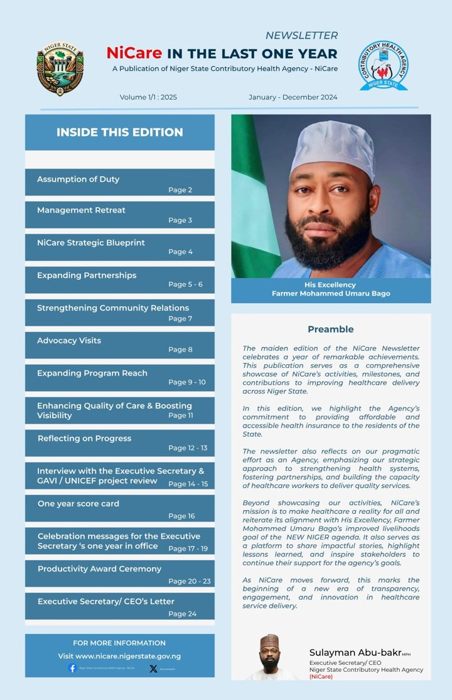

Newsletters & Reports
Newsletters, letters
and scorecards.
Public updates from the Executive Secretary on the Niger State Contributory Health Agency's progress toward universal health coverage: the plan, the progress, and what comes next.
NiCare Newsletter
The annual
NiCare Newsletter.
Published each January under his editorship, the NiCare Newsletter records the Agency's year: reforms, partnerships, programmes, the scorecard and a letter from the Executive Secretary.
in 2025 January 2026 edition SA

From Vol. 2 · January 2026
Letter from our Executive Secretary and CEO, 2026
Dear Esteemed Stakeholders, Partners, and Members of the NiCare Family,
Compliments of the Season!
It is with a deep sense of responsibility and renewed commitment that I present this message as part of this edition of the NiCare Newsletter. This period marks a defining phase in the evolution of the Niger State Contributory Health Insurance Scheme, characterised by deliberate reforms, strategic leadership, and accelerated implementation of our mandate to achieve universal health coverage for the people of Niger State. The NEW NIGER agenda of the Farmer Governor, Dr Mohammed Umaru Bago, and NiCare's strategic priorities continue to be our guiding compass.
At the heart of our progress is the recognition that institutions do not outperform the capacity of the people who drive them. As NiCare scales up its operations and expands coverage, targeted capacity building for staff has become both necessary and urgent. We are intentionally investing in strengthening technical, managerial, and operational competencies across the Scheme to ensure our workforce is adequately equipped to aggressively drive the implementation of our planned activities. This investment is foundational to delivering efficiency, accountability, and results.
This renewed operational momentum is firmly anchored in the official launch of the revised NiCare Operational Guidelines by His Excellency, the Executive Governor of Niger State. The revised guidelines provide clearer direction, streamlined processes, and stronger governance mechanisms to improve service delivery and institutional efficiency. They serve as the authoritative framework backing our expanded activities and reinforcing our resolve to operate with transparency and professionalism.
More still, the formal enrolment of His Excellency the Executive Governor, the Deputy Governor, and the Head of Service into the Health Insurance Scheme stands as a powerful statement of leadership by example. Their enrolment sends a clear and unequivocal message to public servants and residents alike: health insurance is not optional, it is essential. This leadership endorsement has significantly strengthened public confidence in the Scheme and accelerated acceptance across government institutions.
As it is the season of celebration, I am thrilled to have received the Award for Excellence in Service to Humanity from Crusader Radio, Minna, at their 7th Anniversary Awards. I dedicate this award to the management and staff of NiCare for their support in making our achievements visible. My deepest appreciation goes to my boss, the Farmer Governor, Mohammed Umaru Bago, for his steadfast support and inspiration.
In furtherance of this momentum, NiCare has undertaken high-level sensitisation engagements with Permanent Secretaries, senior civil servants, and key decision-makers across Ministries, Departments, and Agencies. These engagements are critical to embedding health insurance into the administrative culture of the State and ensuring seamless enrolment, compliance, and premium remittance across the public sector.
Beyond government structures, NiCare is witnessing a new and innovative phase of community-driven expansion. Political leaders across constituencies have emerged as Health Insurance Drive Champions, actively mobilising residents, promoting enrolment, and advocating for financial protection against health-related shocks. This model of constituency-based ownership reinforces our conviction that sustainable health insurance coverage must be locally driven, politically supported, and socially embraced.
This progress is further reinforced by increased enrolment through the Basic Health Care Provision Fund (BHCPF) gateway, as well as a significant rise in enrolment among personnel of the Niger State Internal Revenue Service. These achievements stand as clear evidence of the collective hard work, commitment, and strategic focus of all stakeholders involved.
In the coming year, 2026, NiCare will revolutionise end-to-end quality across the entire health insurance value chain: from internal operational processes to the quality of Primary Health Care services delivered to our esteemed enrolees. This commitment will guide our actions as we deepen impact, roll out digital systems, improve service delivery, strengthen trust in the scheme and, overall, “improve livelihood” of Nigerlites.
I commend our staff, partners, and stakeholders for their dedication and shared vision. Thank you for your continued support.
Scorecards
Measured against
four pillars.
Each year, progress is reported against the four strategic pillars of the 4-Point Agenda: strengthening institutions, corporate communication, health insurance coverage and digital transformation.


Strategy · April 2024
Strategy Presentation
The 4-Point Agenda for NiCare, 2024–2027
Presented in April 2024, three months into his tenure, the agenda sets out the vision to position NiCare as the leading institution driving universal health coverage in Niger State and improving livelihoods, in line with the Governor's New Niger Agenda. It is anchored in four guiding principles: client-centred care, equitable access to basic healthcare, accountability, and financial risk protection.
- 1
Strengthening the Institution
Reform the organisational structure and top management, upskill and motivate the workforce, and secure the resources for efficient delivery.
- 2
Rebranding Corporate Communication
Use digital and traditional media, community involvement and compelling brand narratives to raise visibility and demand.
- 3
Driving Health Insurance Coverage
Target up to 15% coverage by 2027 through innovative products, streamlined enrolment with MDAs and providers, better utilisation and an executive order to boost enrolment.
- 4
Digitalising Health Insurance
A comprehensive digitalisation strategy, digital workflows, and interoperability with provider EMR systems and HMOs.
Follow on LinkedIn for new issues and updates.
Follow on LinkedIn